← Mục lục sáchSÁCH DỊCH · ECGBOOK · CHƯƠNG 2
NGUYÊN LÝ CƠ BẢN CỦA ĐIỆN TÂM ĐỒ
2.1. ĐIỆN CỰC VÀ CHUYỂN ĐẠO ĐIỆN TÂM ĐỒ
Điện cực điện tâm đồ
- Máy điện tâm đồ có 10 điện cực được gắn trên cơ thể
- Điện cực chi (4)
- Gắn vào các chi
- Điện cực chi màu đen là điện cực đất (ground)
- Điện cực trước tim (6)
- Gắn lên thành ngực
- Điện cực chi (4)
- Các điện cực ghi nhận vectơ điện của cơ tim
- Máy điện tâm đồ hiển thị vectơ dưới dạng sóng điện tâm đồ
- Giấy điện tâm đồ có 12 chuyển đạo:
- V1, V2, V3, V4, V5, V6
- I, II, III, aVF, aVL, aVR
Điện cực chi
- Điện cực chi được kẹp vào các chi
- Ở cổ tay và cổ chân
- Độ cao đặt điện cực không quan trọng
- Vị trí đặt điện cực
- Đỏ – tay phải (RA)
- Vàng – tay trái (LA)
- Xanh lá – chân trái (LL)
- Đen – chân phải (RL)
- Là điện cực đất (không ghi nhận vectơ điện)
- Khi dùng 3 điện cực chi
- Máy điện tâm đồ tạo ra 6 chuyển đạo trên giấy:
- Chuyển đạo chi (I, II, III, aVL, aVF, aVR)
- Máy điện tâm đồ tạo ra 6 chuyển đạo trên giấy:
Điện cực trước tim
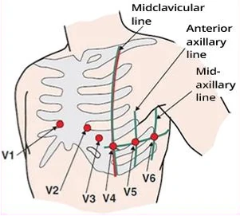
- Điện cực trước tim được gắn hút lên thành ngực
- Vị trí đặt là quan trọng
- Vị trí đặt điện cực
- V1 – khoang liên sườn 4, bờ ức phải
- V2 – khoang liên sườn 4, bờ ức trái
- V3 – chính giữa V2 và V4
- V4 – khoang liên sườn 5, đường giữa đòn
- V5 – khoang liên sườn 5, đường nách trước
- V6 – khoang liên sườn 5, đường nách giữa
- Điện cực trước tim xuất hiện trên giấy điện tâm đồ dưới dạng:
- Chuyển đạo trước tim (V1-V6)
Cách đặt điện cực trước tim
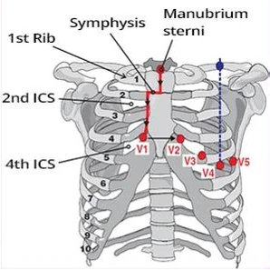
- Điểm mấu chốt là xác định khoang liên sườn 4 (intercostal space – ICS)
- Sờ tìm phần trên của xương ức (cán ức – manubrium sterni)
- Trượt xuống tới chỗ gờ sờ được (khớp cán – thân xương ức, manubrio-sternal symphysis)
- Rồi trượt sang phải cạnh ức (ra bờ xương ức)
- Sẽ chạm tới xương sườn 2
- Trượt xuống cạnh ức và đếm các khoang liên sườn
- Sẽ tới khoang liên sườn 4 (V1)
- Trượt sang trái cạnh ức (V2)
- Sờ tìm khoang liên sườn 5 và đường giữa đòn (V4)
- Chuyển đạo V3 đặt chính giữa V2 và V4
- Chuyển đạo V5-V6 nằm cùng mức với V4
- V5 (đường nách trước)
- V6 (đường nách giữa)
Vôn kế và điện tâm đồ
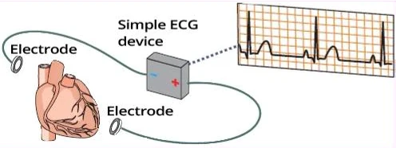
Máy điện tâm đồ đơn giản
- Máy điện tâm đồ là một vôn kế ghi lại điện thế (volt) dưới dạng đường cong điện tâm đồ
- Điện thế được sinh ra trong quá trình lan truyền của vectơ điện qua cơ tim
- Vôn kế (máy điện tâm đồ) luôn có một điện cực dương và một điện cực âm
- Nếu giữa hai điện cực có phần cơ tim đã khử cực (-) và phần đã tái cực (+) (vectơ điện)
- Thì vôn kế đo được hiệu điện thế, và điện tâm đồ hiển thị thành sóng nhọn hoặc sóng tròn
- Nếu giữa hai điện cực chỉ có phần cơ tim đã khử cực (-) hoặc chỉ có phần đã tái cực (+)
- Thì vôn kế không đo được hiệu điện thế nào, và điện tâm đồ hiển thị thành đường đẳng điện
Ba điện cực chi
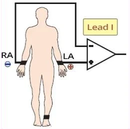
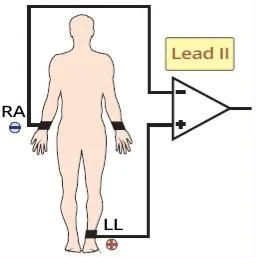
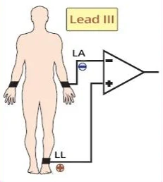
Điện cực chi và chuyển đạo chi
- Có 4 điện cực chi
- Điện cực đen là điện cực đất, và máy điện tâm đồ không cần nó để phát hiện vectơ điện
- 3 điện cực chi là các điện cực của vôn kế
- Một dương và một âm
- Nếu vectơ điện di chuyển
- Hướng về điện cực dương, sinh ra một sóng nhọn dương
- Đi xa khỏi điện cực dương, sinh ra một sóng nhọn âm
- Máy điện tâm đồ từ đó tạo ra 3 chuyển đạo chi (I, II, III) trên giấy
- Một điện cực (màu vàng) được đặt ở cổ tay trái
- Máy điện tâm đồ đảo cực tính của nó và dùng nó:
- Làm cực dương ở chuyển đạo I
- Làm cực âm ở chuyển đạo III
Nguyên lý của chuyển đạo I
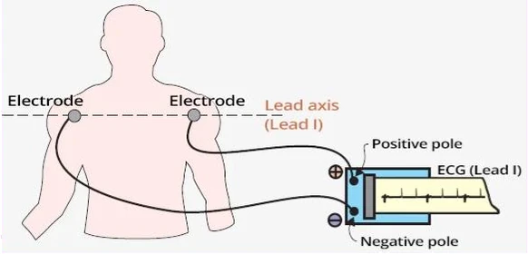
Chuyển đạo I
- 3 điện cực chi được đặt ở cổ tay và cổ chân trái
- Cơ thể là vật dẫn điện tốt, nên không quan trọng việc bạn đặt điện cực
- Ở vai hay ở cổ tay
- Ở đùi hay ở cổ chân
- Hình minh hoạ chuyển đạo I
- Điện cực âm ở vai phải
- Điện cực dương ở vai trái
Tam giác Einthoven
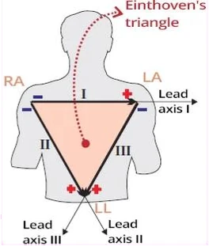
- 3 điện cực chi (tay phải, tay trái, đùi trái)
- Tạo thành tam giác Einthoven
- Điều này tạo ra 3 chuyển đạo lưỡng cực:
- Lưỡng cực vì mỗi chuyển đạo có 2 điện cực
- Chuyển đạo I: tay phải (-) và tay trái (+)
- Chuyển đạo II: tay phải (-) và đùi trái (+)
- Chuyển đạo III: tay trái (+) và đùi trái (-)
Trục điện của chuyển đạo
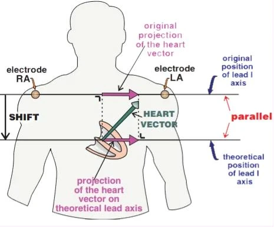
- Mỗi chuyển đạo lưỡng cực (I, II, III) đều có
- Một điện cực dương (+) và một điện cực âm (-)
- Một trục điện nằm giữa cực (+) và cực (-)
- Vectơ điện của tim
- Được chiếu lên trục điện của chuyển đạo
- Dịch chuyển song song chuyển đạo (I, II, III)
- Không làm thay đổi độ lớn của vectơ trên trục điện
Cực trung tâm Wilson (WCT)
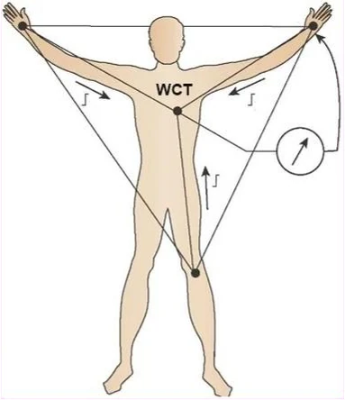
- Mỗi chuyển đạo đều phải có
- Một điện cực dương và một điện cực âm
- Giữa chúng có một trục điện của chuyển đạo
- Các chuyển đạo Einthoven (I, II, III)
- Là lưỡng cực (có một điện cực dương và một điện cực âm)
- Wilson nối 3 điện cực chi qua các điện trở
- Và tạo ra một tâm điện học của tim
- Nó đóng vai trò điện cực âm tham chiếu
- Được gọi là cực trung tâm Wilson (Wilson central terminal – WCT)
- Máy điện tâm đồ dựa trên 3 điện cực chi
- Tạo ra một điện cực tham chiếu ở tâm của tam giác
- Cực trung tâm Wilson nằm ở:
- Dưới bộ nối nhĩ thất
- Bên trái vách liên thất
Các chuyển đạo Einthoven
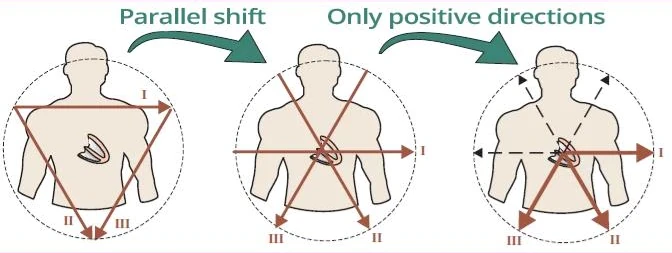
- Điện cực được đặt trên cơ thể bệnh nhân
(có 10 điện cực) - Trên giấy điện tâm đồ, ta thấy các chuyển đạo (có 12 chuyển đạo) do máy điện tâm đồ tạo ra từ các điện cực đã đặt
Các chuyển đạo Einthoven
- Các chuyển đạo (I, II, III) có thể được dịch chuyển song song về phía cực trung tâm
- Cực trung tâm Wilson đóng vai trò điện cực âm do máy điện tâm đồ tính ra
- Trục điện của từng chuyển đạo (I, II, III)
- Hướng từ cực trung tâm về phía điện cực dương
Các chuyển đạo Goldberger
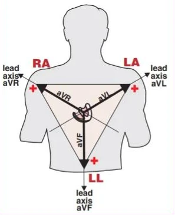
- Máy điện tâm đồ tạo ra từ 3 điện cực:
- Các chuyển đạo Einthoven (I, II, III)
- Các chuyển đạo Goldberger (aVR, aVF, aVL)
- Các chuyển đạo Goldberger (aVR, aVF, aVL) hướng
- Từ cực trung tâm về phía các điện cực chi
- Các chuyển đạo Goldberger là chuyển đạo tăng cường (augmented)
- Nếu máy điện tâm đồ đo chúng từ cực trung tâm tới các điện cực (+)
- Thì đường cong điện tâm đồ sẽ rất thấp
- Máy điện tâm đồ đo chúng
- Từ trung điểm của cạnh đối diện trong tam giác Einthoven
- Tín hiệu điện tâm đồ nhờ đó cao hơn 50%
- Do đó chúng được gọi là tăng cường (augmented)
- Nếu máy điện tâm đồ đo chúng từ cực trung tâm tới các điện cực (+)
- aVR (augmented vector right – vectơ tăng cường bên phải)
- aVL (augmented vector left – vectơ tăng cường bên trái)
- aVF (augmented vector foot – vectơ tăng cường phía chân)
Hệ trục sáu chuyển đạo
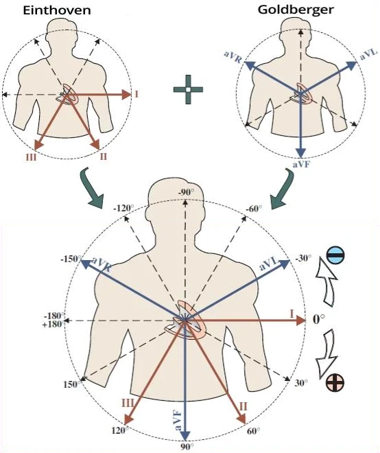
- Từ 3 điện cực đặt ở các chi
- Máy điện tâm đồ tạo ra 6 chuyển đạo
- Các chuyển đạo Einthoven (I, II, III)
- Các chuyển đạo Goldberger (aVR, aVF, aVL)
- Các chuyển đạo (I, II, III, aVR, aVF, aVL) gộp chung được gọi là chuyển đạo chi
Hệ trục sáu chuyển đạo
- Được tạo ra bằng cách kết hợp các chuyển đạo Einthoven và Goldberger
- Từ cực trung tâm, 6 chuyển đạo toả ra theo các hướng khác nhau
- Mỗi chuyển đạo "nhìn" quả tim từ một góc quan sát khác nhau
- 6 chuyển đạo này đôi khi được gọi là hệ trục sáu chuyển đạo (hexaxial system)
- Các chuyển đạo chi "nhìn" quả tim trong mặt phẳng trán
- Chúng ghi nhận vectơ điện tim
Điện cực trước tim
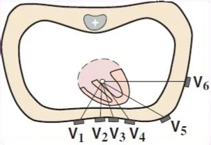
- Gắn lên thành ngực
- Trục điện của các chuyển đạo trước tim hướng
- Từ cực trung tâm
- Tới từng điện cực trước tim đã gắn
- "Nhìn" quả tim trong mặt phẳng ngang
- Đôi khi được gọi là các chuyển đạo Wilson
Điện tâm đồ 12 chuyển đạo
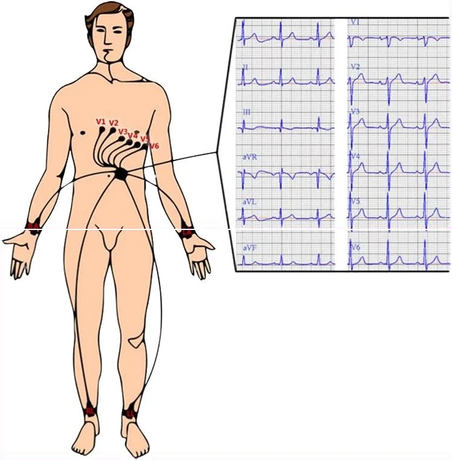
- Máy điện tâm đồ có 10 điện cực được gắn lên cơ thể
- Điện cực đen đóng vai trò điện cực đất và không góp phần tạo ra sóng điện tâm đồ
- Do đó máy điện tâm đồ dùng 9 điện cực để tạo ra sóng điện tâm đồ
- Giấy điện tâm đồ hiển thị 12 chuyển đạo, do máy điện tâm đồ tạo ra từ các điện cực đã gắn
- Các chuyển đạo chi chuẩn (I, II, III, aVR, aVF, aVL):
- Các chuyển đạo Einthoven (I, II, III)
- Là lưỡng cực vì được tạo ra từ một điện cực dương và một điện cực âm
- Các chuyển đạo Goldberger (aVR, aVF, aVL)
- Là đơn cực vì chỉ được tạo ra từ một điện cực dương (và cực trung tâm)
- Các chuyển đạo Einthoven (I, II, III)
- Các chuyển đạo trước tim của Wilson (V1-V6)
- Là đơn cực vì chỉ được tạo ra từ các điện cực trước tim (và cực trung tâm)
Các chuyển đạo trong không gian ba chiều
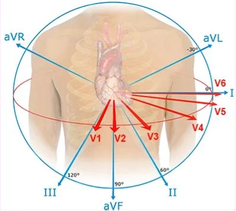
- 12 chuyển đạo "nhìn" quả tim trong 2 mặt phẳng:
- Mặt phẳng ngang (V1-V6)
- Mặt phẳng trán (I, II, III, aVF, aVR, aVL)
- Tất cả các chuyển đạo đều xuất phát từ cực trung tâm
- Nếu vectơ điện hướng
- Về phía chuyển đạo – tạo ra một sóng lệch dương
- Đi xa khỏi chuyển đạo – tạo ra một sóng lệch âm
Các vectơ thất
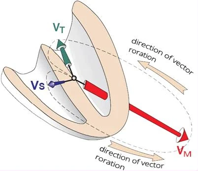
- Vách liên thất mỏng được khử cực đầu tiên
- Tạo ra một vectơ vách nhỏ (V_S)
- Sóng Q
- Tiếp đó thất trái đồ sộ được khử cực
- Tạo ra một vectơ chính lớn (V_M)
- Đồng thời thất phải mỏng cũng được khử cực
- Vectơ thất phải nhỏ
- Không ảnh hưởng tới hướng của vectơ chính
- Sóng R
- Cuối cùng đáy thất trái được khử cực
- Tạo ra một vectơ tận nhỏ (V_T)
- Sóng S
- Phải hình dung các vectơ trong không gian ba chiều
- Các chuyển đạo ghi lại vectơ theo thời gian
Điện tâm đồ và các vectơ thất
- Hai thất được khử cực tuần tự:
- Vách liên thất (V_S – vectơ vách)
- Thất trái và thất phải (V_M – vectơ chính)
- Đáy thất trái (V_T – vectơ tận)
- Phức bộ QRS xuất hiện khác nhau ở mỗi chuyển đạo
- Vì mỗi chuyển đạo "nhìn" các vectơ từ một góc khác nhau
- Nếu vectơ hướng
- Về phía chuyển đạo – tạo ra một sóng lệch dương
- Đi xa khỏi chuyển đạo – tạo ra một sóng lệch âm
- Các hình minh hoạ quá trình khử cực hai thất (phức bộ QRS)
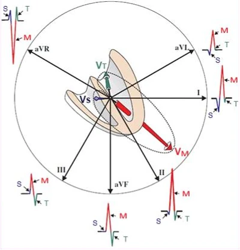
Chuyển đạo chi
- "Nhìn" các vectơ trong mặt phẳng trán
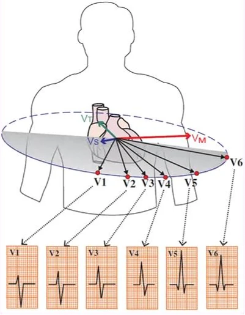
Chuyển đạo trước tim
- "Nhìn" các vectơ trong mặt phẳng ngang
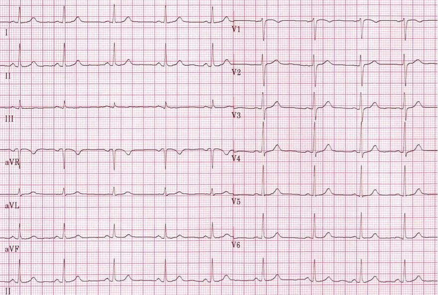
Nhịp xoang
- Trên điện tâm đồ là nhịp xoang
- Chú ý cách biên độ các phức bộ QRS thay đổi ở các chuyển đạo khác nhau
- Các vectơ ở hai nhĩ tạo ra sóng P
- Các vectơ ở hai thất tạo ra phức bộ QRS và sóng T
Các chuyển đạo và điện tâm đồ 12 chuyển đạo
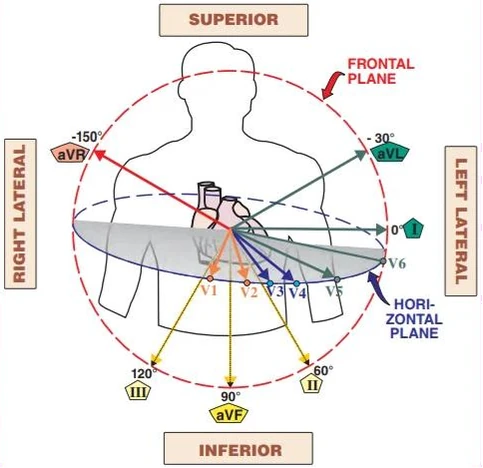
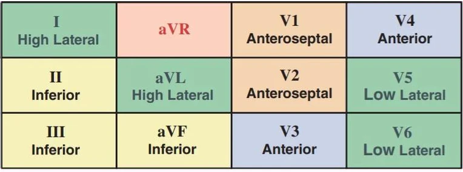
Điện tâm đồ 12 chuyển đạo
- Mỗi chuyển đạo nhìn quả tim từ một góc khác nhau
- Các chuyển đạo lân cận (adjacent leads)
- Các chuyển đạo này cùng nhìn vào một vùng của quả tim
- Chúng được dùng để định khu nhồi máu cơ tim
- Chuyển đạo bên phải (aVR)
- Chuyển đạo aVR không có chuyển đạo lân cận và đôi khi được gọi là "chuyển đạo bị lãng quên"
- Các chuyển đạo dưới (III, aVF, II)
- Các chuyển đạo bên (V5-V6, I, aVL)
- Các chuyển đạo bên thấp (V5-V6)
- Các chuyển đạo bên cao (I, aVL)
- Các chuyển đạo trước vách (V1-V2)
- Các chuyển đạo trước (V3-V4)
Chuyển đạo trước tim (V1-V2)
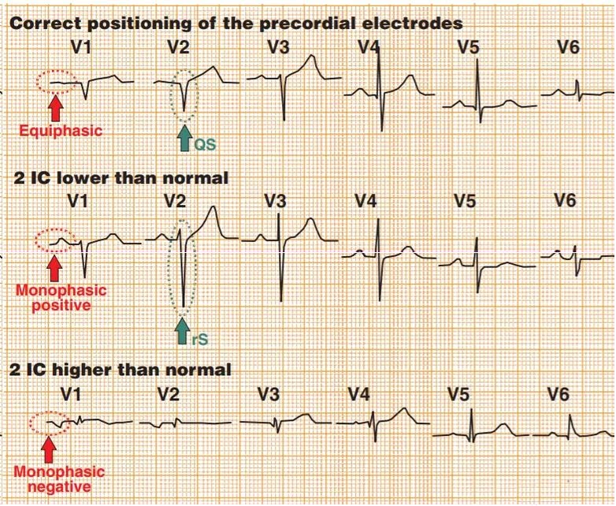
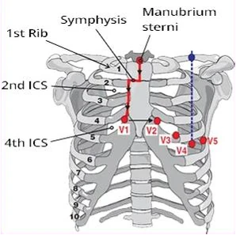
- Chuyển đạo trước tim (V1-V2) được đặt cạnh ức ở khoang liên sườn 4
- Sóng P sinh lý (V1-V2) có dạng hai pha cân bằng (equiphase) (dương – âm)
- Chuyển đạo (V1-V2) được dùng để chẩn đoán phân biệt:
- Blốc phân nhánh trái trước và nhồi máu trước vách cũ
Chẩn đoán phân biệt bằng V1-V2
- Đặt đúng điện cực V1-V2 ở khoang liên sườn 4
- Sóng P có dạng hai pha cân bằng
- Đôi khi ở V1-V2 thấy dạng QS, có thể gợi ý:
- Blốc phân nhánh trái trước, hoặc nhồi máu trước vách cũ
- Nếu đặt V1-V2 thấp hơn (khoang liên sườn 6)
- Sóng P đơn pha dương
- Xuất hiện dạng rS (V1-V2)
- Điều này chỉ ra blốc phân nhánh trái trước
- Nhồi máu cũ vẫn sẽ cho dạng QS (không có sóng r)
- Nếu đặt V1-V2 cao hơn (khoang liên sườn 2)
- Sóng P đơn pha âm
2.2. CƠ CHẾ HÌNH THÀNH ĐƯỜNG CONG ĐIỆN TÂM ĐỒ
Vectơ thất chính
- Trước hết, vách liên thất mỏng được khử cực
- Hình thành một vectơ vách nhỏ (V_S)
- Sóng Q
- Tiếp đó, thất trái đồ sộ được khử cực
- Hình thành một vectơ chính lớn (V_M)
- Đồng thời thất phải mỏng cũng được khử cực
- Vectơ thất phải nhỏ
- Không ảnh hưởng tới hướng của vectơ chính
- Sóng R
- Cuối cùng, đáy thất trái được khử cực
- Hình thành một vectơ tận nhỏ (V_T)
- Sóng S
- Phải hình dung các vectơ trong không gian ba chiều
- Các chuyển đạo ghi lại vectơ theo thời gian
Các chuyển đạo điện tâm đồ
- Một bản ghi điện tâm đồ có 12 chuyển đạo
- Chuyển đạo chi (I, II, III, aVF, aVL, aVR)
- Chuyển đạo trước tim (V1-V6)
- Mỗi chuyển đạo "nhìn" các vectơ từ một góc khác nhau
- Các chuyển đạo "nhìn" về tâm điện học của tim
- Tại cực trung tâm Wilson
- Nếu vectơ điện hướng
- Về phía chuyển đạo trên bề mặt – hình thành một sóng lệch dương
- Đi xa khỏi chuyển đạo trên bề mặt – hình thành một sóng lệch âm
Trục điện của chuyển đạo
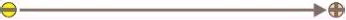
- Mỗi chuyển đạo đều có một trục điện
- Giữa cực trung tâm (-) và điện cực bề mặt (+)
- Các vectơ điện của tim được chiếu lên trục điện của các chuyển đạo
- Và tạo ra sóng điện tâm đồ
- Các vectơ điện không phải lúc nào cũng xuất phát từ cực trung tâm
Sóng lệch dương và sóng lệch âm
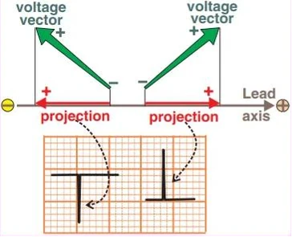
- Vectơ điện của tim
- Luôn phải được chiếu lên trục điện của chuyển đạo
- Sóng lệch dương xuất hiện
- Nếu vectơ hướng về phía điện cực bề mặt (+)
- Sóng lệch âm xuất hiện
- Nếu vectơ hướng đi xa khỏi điện cực bề mặt (+)
Độ lớn của sóng lệch
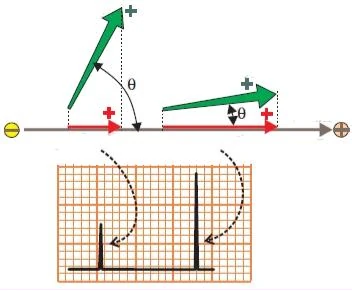
- Độ lớn của sóng lệch trên điện tâm đồ
- Phụ thuộc vào góc giữa vectơ và trục của chuyển đạo
- Góc càng nhỏ
- Vectơ càng hướng thẳng về phía điện cực (+)
Sóng lệch đẳng điện
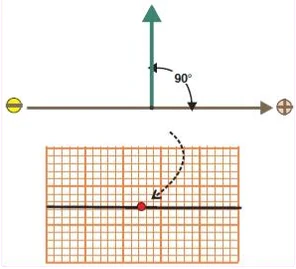
- Nếu vectơ vuông góc với trục chuyển đạo
- Thì không xuất hiện sóng lệch nào
- Tuy nhiên, vectơ điện được "quan sát" bởi 12 chuyển đạo
- Mỗi chuyển đạo có hướng trục điện khác nhau
- Cùng một vectơ không bao giờ đẳng điện ở tất cả các chuyển đạo
Sóng lệch hai pha
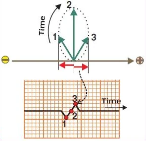
- Cơ tim khử cực từ từ
- Vectơ điện thường xoay quanh một điểm
- Ví dụ khử cực hai thất
- (vectơ xoay quanh cực trung tâm)
- Chuyển đạo ghi lại các vectơ tuần tự và tạo ra đường cong điện tâm đồ
- Vectơ thứ 1 hướng ra xa khỏi điện cực (+)
- Vectơ thứ 2 vuông góc với điện cực (+)
- Vectơ thứ 3 hướng về phía điện cực (+)
- Dần dần hình thành một sóng lệch hai pha
Sóng lệch ưu thế dương
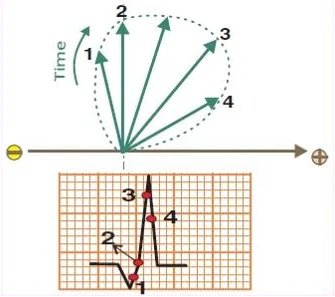
- Đường cong điện tâm đồ ghi lại 4 vectơ điện theo thời gian
- Vectơ vuông góc là ranh giới giữa phần sóng lệch âm và phần sóng lệch dương
Sóng lệch ưu thế âm
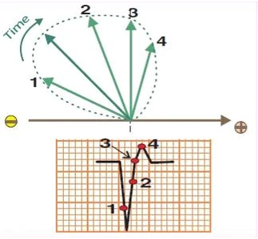
- Đường cong điện tâm đồ ghi lại 4 vectơ điện theo thời gian
- Vectơ vuông góc là ranh giới giữa phần sóng lệch âm và phần sóng lệch dương
Điện tâm đồ và các vectơ thất
- Hai thất được khử cực tuần tự:
- Vách liên thất (V_S – vectơ vách)
- Thất trái và thất phải (V_M – vectơ chính)
- Đáy thất trái (V_T – vectơ tận)
- Vectơ thất xoay theo thời gian quanh tâm điện học của tim
- Cực trung tâm Wilson
- Phức bộ QRS xuất hiện khác nhau ở mỗi chuyển đạo
- Vì mỗi chuyển đạo "nhìn" các vectơ từ một góc khác nhau
- Nếu vectơ hướng
- Về phía chuyển đạo – xuất hiện một sóng lệch dương
- Đi xa khỏi chuyển đạo – xuất hiện một sóng lệch âm
- Nếu vectơ vuông góc với chuyển đạo – không có sóng lệch
- Các hình minh hoạ quá trình khử cực hai thất (phức bộ QRS)
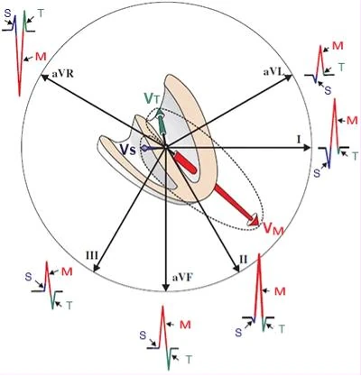
Chuyển đạo chi
- "Nhìn" các vectơ trong mặt phẳng trán
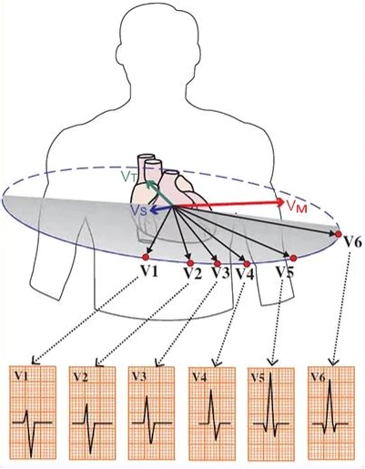
Chuyển đạo trước tim
- "Nhìn" các vectơ trong mặt phẳng ngang
Nhịp xoang
- Điện tâm đồ cho thấy nhịp xoang
- Chú ý cách biên độ các phức bộ QRS thay đổi ở các chuyển đạo khác nhau
- Các vectơ ở hai nhĩ tạo ra sóng P
- Các vectơ ở hai thất tạo ra phức bộ QRS và sóng T
2.3. TẦN SỐ TIM TRÊN ĐIỆN TÂM ĐỒ
Vectơ thất chính
- Các chuyển đạo ghi lại hoạt động điện của tim
- Ở các thời điểm khác nhau trong quá trình khử cực và tái cực
- Khối cơ tim khử cực (hoặc tái cực) càng lớn
- Thì hoạt động điện càng lớn (và vectơ càng lớn)
- Khử cực hai thất diễn ra tuần tự:
- Trước hết, vách liên thất mỏng được khử cực
- Sinh ra một vectơ vách nhỏ (V_S)
- Tiếp đó, thất trái đồ sộ được khử cực
- Sinh ra một vectơ chính lớn (V_H)
- Cuối cùng, đáy thất trái được khử cực
- Sinh ra một vectơ tận nhỏ (V_T)
- Trước hết, vách liên thất mỏng được khử cực
- Tần số tim
- Là số lần tâm thu thất trong một phút
- Vectơ chính (V_H) tạo ra sóng R trên điện tâm đồ
- Đây là tương ứng trên điện tâm đồ của tâm thu thất
Các chuyển đạo điện tâm đồ
- Một bản ghi điện tâm đồ có 12 chuyển đạo
- Chuyển đạo chi (I, II, III, aVF, aVL, aVR)
- Chuyển đạo trước tim (V1-V6)
- Mỗi chuyển đạo "nhìn" vectơ chính từ một góc khác nhau
- Các chuyển đạo "nhìn" về tâm điện học của tim
- Tại cực trung tâm Wilson
- Nếu vectơ chính hướng
- Về phía chuyển đạo trên bề mặt – tạo ra một sóng R dương
- Đi xa khỏi chuyển đạo trên bề mặt – tạo ra một sóng S âm
Giấy điện tâm đồ 12 chuyển đạo
- Điện tâm đồ dưới đây cho thấy nhịp xoang
- Các vectơ tim ở hai nhĩ tạo ra sóng P
- Các vectơ tim ở hai thất tạo ra phức bộ QRS và sóng T
- Vectơ tim chính tạo ra sóng lệch lớn nhất (sóng R, sóng S)
Cơ chế ghi điện tâm đồ 12 chuyển đạo
- Giấy điện tâm đồ chạy ra khỏi máy điện tâm đồ một cách tuần tự
- Máy điện tâm đồ ghi hoạt động điện của tim một cách tuần tự
- Và viết nó vào từng chuyển đạo riêng lẻ
- Đồng thời, các chuyển đạo được ghi cùng lúc nằm thẳng hàng theo chiều dọc trên giấy điện tâm đồ
- Trước hết, được ghi đồng thời là các chuyển đạo (I, II, III, aVR, aVL, aVF, II)
- Sau đó, được ghi đồng thời là các chuyển đạo (V1-V6)
- Các phức bộ QRS (khử cực thất) hoặc sóng P (khử cực nhĩ) có thể được nối với nhau bằng một đường thẳng đứng
- Bởi vì cùng những vectơ đó được các chuyển đạo ghi nhận đồng thời, và chúng được xếp thẳng hàng theo chiều dọc trên giấy điện tâm đồ
- Máy điện tâm đồ ghi hoạt động điện của tim một cách tuần tự
- Dải nhịp chuyển đạo II liên tục
- Nằm ở phía dưới cùng của giấy điện tâm đồ
- Ghi liên tục từ đầu tới cuối tờ giấy
- Dùng để chẩn đoán loạn nhịp tốt hơn
- Giấy chạy với tốc độ 25 mm/s
- Đôi khi 50 mm/s
Ô lớn và ô nhỏ
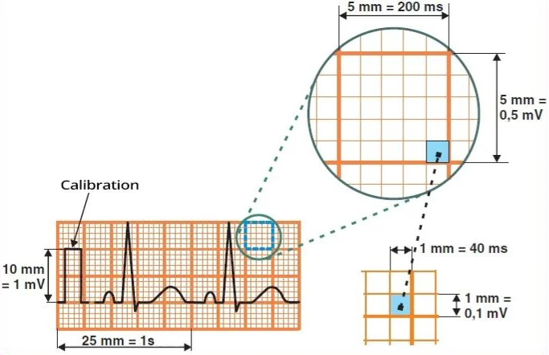
- Giấy điện tâm đồ chạy với tốc độ 25 mm/s (1 giây là 1000 ms)
- Một ô lớn (5x5 mm) tương ứng 0,2 giây (200 ms)
- Một ô nhỏ (1x1 mm) tương ứng 0,04 giây (40 ms)
- 1 giây của chu chuyển tim là 5 ô lớn (25 mm)
- Định chuẩn (calibration)
- Quyết định biên độ của các sóng
- 1 mV tương ứng 10 mm
Khoảng thời gian và tần số
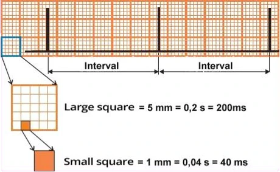
- 1 phút = 60 giây = 60.000 ms
- Các khoảng được đo bằng ms (mili giây)
- Khoảng RR là số ms giữa hai sóng R
- Tần số là số lần tâm thu trong một phút
- Tâm thu tương ứng với phức bộ QRS
- Tần số được tính theo 3 cách:
- 60.000/khoảng RR (ms)
- 300/số ô lớn trong khoảng RR
- 1.500/số ô nhỏ trong khoảng RR
Các phương pháp tính tần số trên điện tâm đồ
- Phương pháp nhanh
- 300-150-100-75-60-50-42-37-33-30...
- Phương pháp 300
- 300 chia cho số ô lớn
- Phương pháp 1500
- 1500 chia cho số ô nhỏ
- Phương pháp 6 giây (cho nhịp không đều, ví dụ rung nhĩ)
- Đếm số phức bộ QRS trong 6 giây (30 ô lớn) rồi nhân với 10
- Phương pháp 3 giây (cho nhịp không đều, ví dụ rung nhĩ)
- Đếm số phức bộ QRS trong 3 giây (15 ô lớn) rồi nhân với 20
Phương pháp nhanh (300-150-100-75-60-50)
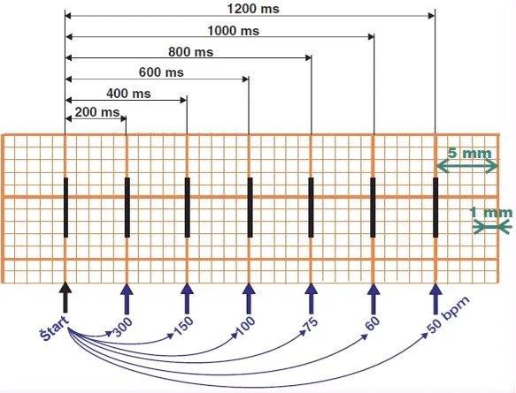
- Tần số: (300-150-100-75-60-50-42-37-33-30...) nhịp mỗi phút (bpm).
- Xuất phát từ công thức 300 chia cho số ô lớn
- Tần số giảm dần khi số ô lớn giữa các khoảng RR (khoảng SS) tăng lên
Phương pháp 300
- 300 chia cho số ô lớn giữa các khoảng RR (khoảng SS)
Phương pháp 1500
- 1500 chia cho số ô nhỏ giữa các khoảng RR (khoảng SS)
Tính tần số tim trên thực hành
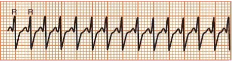
Tần số tim 300/phút
- 300-150-100-75-60-50
- 300/1 ô lớn = 300/phút
- 1500/5 ô nhỏ = 300/phút
- 60000/200ms = 300/phút
- Đây là nhịp nhanh trên thất
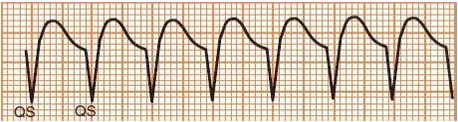
Tần số tim 150/phút
- 300-150-100-75-60-50
- 300/2 ô lớn = 150/phút
- 1500/10 ô nhỏ = 150/phút
- 60000/400ms = 150/phút
- Đây là nhịp nhanh thất đơn dạng
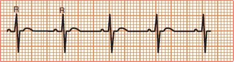
Tần số tim 100/phút
- 300-150-100-75-60-50
- 300/3 ô lớn = 100/phút
- 1500/15 ô nhỏ = 100/phút
- 60000/600ms = 100/phút
- Đây là nhịp nhanh xoang
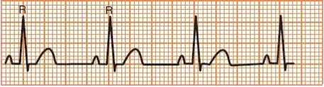
Tần số tim 75/phút
- 300-150-100-75-60-50
- 300/4 ô lớn = 75/phút
- 1500/20 ô nhỏ = 75/phút
- 60000/800ms = 75/phút
- Đây là nhịp xoang
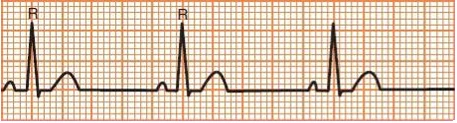
Tần số tim 60/phút
- 300-150-100-75-60-50
- 300/5 ô lớn = 60/phút
- 1500/25 ô nhỏ = 60/phút
- 60000/1000ms = 60/phút
- Đây là nhịp xoang
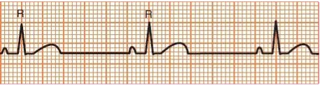
Tần số tim 50/phút
- 300-150-100-75-60-50
- 300/6 ô lớn = 50/phút
- 1500/30 ô nhỏ = 50/phút
- 60000/1200ms = 50/phút
- Đây là nhịp chậm xoang (giới hạn)
Thước điện tâm đồ
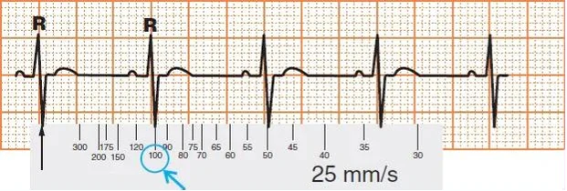
Tính tần số tim bằng thước điện tâm đồ
- Đặt mũi tên của thước điện tâm đồ lên một sóng R bất kỳ (sóng S)
- Rồi đọc tần số tim trên thước tại sóng R kế tiếp (sóng S)
- Một số thước có 2 thang đo
- Dành cho tốc độ giấy 25 mm/s và 50 mm/s
- Tốc độ ghi điện tâm đồ thường được in sẵn trên giấy điện tâm đồ
Phương pháp 6 giây
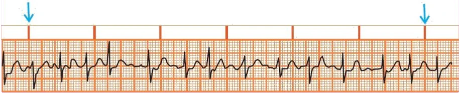
- Nếu nhịp tim không đều (ví dụ rung nhĩ)
- Thì không thể dùng các phương pháp trên để tính tần số
- Dùng phương pháp 6 giây
- Phương pháp này tính tần số trung bình của các phức bộ QRS trong 6 giây (30 ô lớn)
- Tần số = số phức bộ QRS trong 6 giây x 10
Tần số 130/phút
- Số phức bộ QRS trong 6 giây (30 ô lớn) là 13
- 13 x 10 = 130/phút
- Điều này gợi ý rung nhĩ
Phương pháp 3 giây
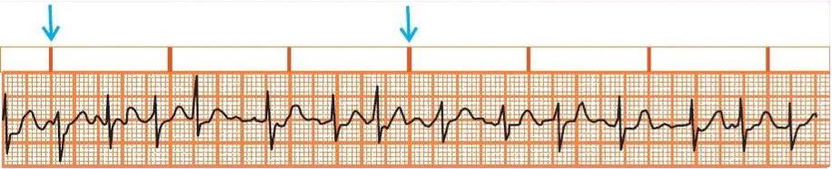
- Dùng khi bản ghi điện tâm đồ quá ngắn
- Phương pháp này kém chính xác hơn phương pháp 6 giây vì tính trung bình trên một đoạn 3 giây ngắn hơn
- Tần số = số phức bộ QRS trong 3 giây (15 ô lớn) x 20
Tần số 140/phút
- Số phức bộ QRS trong 3 giây (15 ô lớn) là 7
- 7 x 20 = 140/phút
- Đây chính là bản ghi điện tâm đồ ở hình trước (rung nhĩ)
- Phương pháp 3 giây tính trung bình trên một đoạn ngắn hơn, nên tần số ra khác (kém chính xác hơn)
2.4. ĐỊNH CHUẨN ĐIỆN THẾ CỦA ĐIỆN TÂM ĐỒ
Máy điện tâm đồ và milivolt
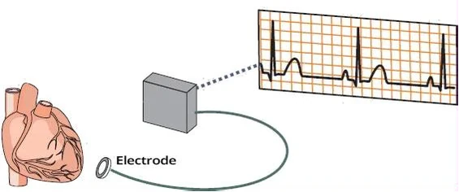
Milivolt và đường cong điện tâm đồ
- Trong chu chuyển tim, quả tim sinh ra các vectơ điện
- Các điện cực điện tâm đồ đặt trên cơ thể bệnh nhân phát hiện hiệu điện thế của các vectơ tính bằng milivolt
- Máy điện tâm đồ
- Chuyển đổi milivolt thành đường cong điện tâm đồ
- Có 10 điện cực đặt trên cơ thể,
dùng để phát hiện các vectơ điện - Hiển thị các vectơ trên giấy điện tâm đồ thành 12 chuyển đạo
Vectơ điện và định chuẩn điện tâm đồ
- Trong quá trình khử cực hai thất
- 3 vectơ điện được sinh ra ở hai thất
- Vectơ vách, vectơ chính và vectơ tận
- Mà ta thấy trên điện tâm đồ là phức bộ QRS
- 3 vectơ điện được sinh ra ở hai thất
- Mỗi vectơ điện (không chỉ vectơ thất)
- Tạo ra một hiệu điện thế tính bằng milivolt
- Khối cơ tim được hoạt hoá điện càng lớn
- Vectơ càng lớn
- Hiệu điện thế (milivolt) càng lớn
- Định chuẩn điện tâm đồ chuẩn là
- 1mV = 10mm (2 ô lớn chồng lên nhau)
Điện tâm đồ 12 chuyển đạo và định chuẩn
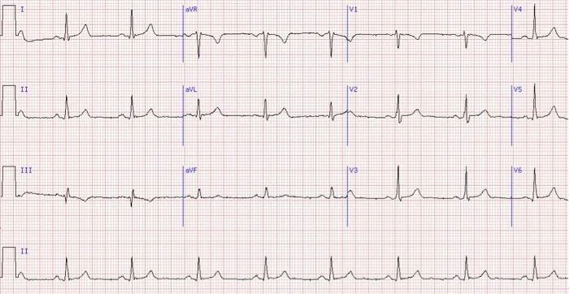
Dấu định chuẩn và giấy điện tâm đồ
- Giấy điện tâm đồ hầu như luôn có một dấu định chuẩn ở đầu bản ghi
- Dấu định chuẩn
- Là một hình chữ nhật đứng (5x10mm) ở đầu tờ giấy
- Cung cấp thông tin về tốc độ của giấy điện tâm đồ và chiều cao của biên độ 1mV
Dấu định chuẩn
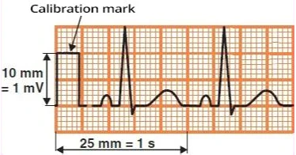
- Cho biết chiều cao của biên độ 1mV
- Theo chuẩn, 1mV = 10mm
- Chiều rộng cho biết tốc độ của giấy điện tâm đồ
- Tốc độ giấy chuẩn là 25mm/s
- Dấu định chuẩn có chiều rộng 5mm
Biên độ điện tâm đồ
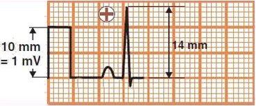
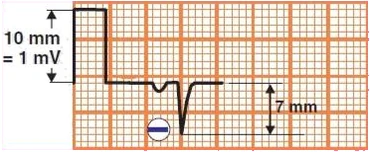
- Biên độ đường cong điện tâm đồ (chiều cao, chiều sâu) phụ thuộc vào:
- Hướng và độ lớn của vectơ điện
- Định chuẩn
- Biên độ đường cong điện tâm đồ
- Được dùng trong chẩn đoán điện tâm đồ
- Ví dụ phì đại thất trái và phì đại thất phải
- Nếu tất cả các phức bộ QRS trên điện tâm đồ đều:
- Rất cao hoặc rất thấp
- Hãy nghĩ tới định chuẩn
- Biên độ tính bằng mm tương ứng với hiệu điện thế
- 14mm = 1,4mV
- 7mm = 0,7mV (với định chuẩn chuẩn 1mV = 10mm)
Biên độ điện tâm đồ và định chuẩn
- Chú ý cách chiều cao của phức bộ QRS thay đổi khi điều chỉnh định chuẩn
Định chuẩn 10mm
- 1mV = 10mm
Định chuẩn 5mm
- 1mV = 5mm
Định chuẩn 20mm
- 1mV = 20mm
Tốc độ giấy điện tâm đồ và định chuẩn
- Tốc độ giấy điện tâm đồ chuẩn là 25mm/s
- Ở tốc độ này, dấu định chuẩn có chiều rộng 5mm
- Đôi khi dùng tốc độ 50mm/s (để chẩn đoán nhịp nhanh trên thất)
- Giấy điện tâm đồ chạy nhanh gấp đôi, nên đường cong điện tâm đồ và dấu định chuẩn rộng gấp đôi
- Dấu định chuẩn có chiều rộng 10mm
- Hai bản ghi điện tâm đồ dưới đây là của cùng một bệnh nhân
Tốc độ giấy 25mm/s
- Dấu định chuẩn rộng 5mm
Tốc độ giấy 50mm/s
- Đường cong điện tâm đồ rộng gấp đôi
- Dấu định chuẩn rộng 10mm
Định chuẩn chuẩn 10mm
- Chiều cao của dấu định chuẩn (bên phải) là 10mm
- Điện tâm đồ trông giống rung nhĩ
- Sóng P không phân biệt được rõ
- Hoạt động tim không đều
Định chuẩn 20mm
- Đây là cùng một bệnh nhân với điện tâm đồ trước đó
- Đặt định chuẩn thành 20mm (dấu định chuẩn ở bên phải)
- Biên độ điện tâm đồ nhờ đó lớn gấp đôi
- Sóng P (mũi tên đỏ) hiện rõ ra trước các phức bộ QRS
- Bệnh nhân có nhiều ngoại tâm thu nhĩ
- Không phải rung nhĩ
- Bệnh nhân có nhiều ngoại tâm thu nhĩ
Định chuẩn 10mm
- Điện tâm đồ cho thấy phì đại thất trái
- S(V1/2) + R(V5/6) ≥ 35mm
- Đây là bệnh nhân tăng huyết áp động mạch
- Các phức bộ QRS ở các chuyển đạo trước tim (V1-V6)
- Chồng lấn sang các phức bộ QRS lân cận
- Để đánh giá QRS ở V1-V6 tốt hơn,
có thể giảm định chuẩn từ 10mm xuống 5mm
Định chuẩn kép 10/5mm
- Đây là cùng một bệnh nhân với điện tâm đồ trước đó
- Điện tâm đồ có định chuẩn kép (dấu định chuẩn có 2 biên độ)
- Chuyển đạo chi có định chuẩn 10mm
- Chuyển đạo trước tim có định chuẩn 5mm
- Phức bộ QRS ở các chuyển đạo trước tim
- Thấp hơn 2 lần so với điện tâm đồ trước đó
- Tiêu chuẩn điện thế của phì đại thất trái cần được nhân đôi
- Chiều cao QRS ở V6 là 30mm (15x2)
Định chuẩn 10mm
- Đây là bệnh nhân nghi ngờ hội chứng WPW
- Sóng delta (mũi tên đỏ) không thể xác định rõ ràng
- Để chẩn đoán sóng delta tốt hơn,
chỉ cần tăng định chuẩn (mũi tên xanh)
Định chuẩn 20mm
- Đây là cùng một bệnh nhân với điện tâm đồ trước đó
- Với định chuẩn 20mm, biên độ điện tâm đồ lớn gấp 2 lần
- Sóng delta hiện rõ (mũi tên đỏ)
- Bệnh nhân có hội chứng WPW
2.5. ĐẶT SAI VỊ TRÍ ĐIỆN CỰC ĐIỆN TÂM ĐỒ
Điện cực chi
- Điện cực chi được kẹp vào các chi
- Vào cổ tay và cổ chân
- Độ cao đặt điện cực không quan trọng
- Khác với điện cực trước tim
- Vị trí đặt điện cực
- Đỏ – tay phải (RA)
- Vàng – tay trái (LA)
- Xanh lá – chân trái (LL)
- Đen – chân phải (RL)
- Đóng vai trò điện cực đất (không ghi nhận vectơ điện)
- Với 3 điện cực chi
- Máy điện tâm đồ tạo ra 6 chuyển đạo trên giấy:
- Chuyển đạo chi (I, II, III, aVL, aVF, aVR)
- Máy điện tâm đồ tạo ra 6 chuyển đạo trên giấy:
Các chuyển đạo chi
- Điện cực chi được gắn vào cơ thể
- Máy điện tâm đồ tạo ra các chuyển đạo trên giấy từ các điện cực đó
- Máy điện tâm đồ tạo ra những thứ sau đây từ các điện cực chi:
- Các chuyển đạo Einthoven (I, II, III)
- Các chuyển đạo Goldberger (aVR, aVL, aVF)
- Cực trung tâm Wilson (WCT)
- (tâm điện học của tim)
Vectơ điện chính
- Khi dịch chuyển các chuyển đạo về cực trung tâm
- Ta thu được một hệ trục sáu chuyển đạo
- Mỗi chuyển đạo "nhìn" vectơ từ một góc khác nhau
- Hướng của vectơ quyết định chiều cao của phức bộ QRS (ở chuyển đạo đó)
- Để chẩn đoán điện cực chi bị đặt sai
- Cần hình dung được hướng của vectơ chính
- QRS dương nếu vectơ hướng VỀ PHÍA chuyển đạo
- QRS âm nếu vectơ hướng RA XA chuyển đạo
- Cần hình dung được hướng của vectơ chính
Tam giác Einthoven
- Khi hoán đổi các điện cực chi
- Trừ điện cực đen (điện cực đất)
- Bạn xoay tam giác Einthoven đi 180°
- Các chuyển đạo tương ứng sẽ bị đảo ngược như soi gương
- Nếu hoán đổi hai điện cực chân (xanh lá với đen)
- Không ảnh hưởng tới các chuyển đạo
- Vì không tác động tới tam giác Einthoven
- Không ảnh hưởng tới các chuyển đạo
- Nếu hoán đổi điện cực đen với một điện cực tay
- Bạn phá vỡ toàn bộ tam giác Einthoven và cực trung tâm
Giả vô tâm thu và điện cực trung tính
- Hoán đổi các điện cực chi tạo nên tam giác Einthoven
- Làm thay đổi các chuyển đạo trên giấy điện tâm đồ
- Tuy nhiên, nếu đưa điện cực trung tính (ở chân trái) vào tam giác
- Sẽ xuất hiện giả vô tâm thu (pseudo-asystole) ở một trong các chuyển đạo Einthoven
Giả vô tâm thu III
- Hoán đổi (LA/RL)
Giả vô tâm thu II
- Hoán đổi (RA/RL)
Giả vô tâm thu I
- Hoán đổi (RA/RL) và (LA/LL)
Tay trái/tay phải (LA/RA)
- Tam giác Einthoven xoay 180°
- Quanh trục điện của chuyển đạo aVF
- Thay đổi trên điện tâm đồ
- Chuyển đạo I đảo ngược
- Chuyển đạo aVL và aVR hoán đổi cho nhau
- Chuyển đạo II và III hoán đổi cho nhau
- aVF không đổi
- Tim sang phải (dextrocardia)
- Hình ảnh tương tự cũng gặp trong tim sang phải
- Nhưng không có hiện tượng tăng dần sóng R (V1-V6)
Điện cực đặt đúng vị trí
- Trục điện là 0°
Đảo: tay trái/tay phải (LA/RA)
- Chuyển đạo I đảo ngược
- Chuyển đạo aVL và aVR hoán đổi cho nhau
- Chuyển đạo II và III hoán đổi cho nhau
- aVF không đổi
Tay trái/chân trái (LA/LL)
- Tam giác Einthoven xoay 180°
- Quanh trục điện của chuyển đạo aVR
- Thay đổi trên điện tâm đồ
- Chuyển đạo III đảo ngược
- Chuyển đạo I và II hoán đổi cho nhau
- Chuyển đạo aVL và aVF hoán đổi cho nhau
- aVR không đổi
Điện cực đặt đúng vị trí
- Trục điện là 80°
Đảo: tay trái/chân trái (LA/LL)
- Chuyển đạo III đảo ngược
- Chuyển đạo I và II hoán đổi cho nhau
- Chuyển đạo aVL và aVF hoán đổi cho nhau
- aVR không đổi
Tay phải/chân trái (RA/LL)
- Tam giác Einthoven xoay 180°
- Quanh trục điện của chuyển đạo aVL
- Thay đổi trên điện tâm đồ
- Chuyển đạo II đảo ngược
- Chuyển đạo aVR và aVF hoán đổi cho nhau
- Chuyển đạo I và III vừa đảo ngược vừa hoán đổi cho nhau
- aVL không đổi
Điện cực đặt đúng vị trí
- Trục điện là 80°
Đảo: tay phải/chân trái (RA/LL)
- Chuyển đạo II đảo ngược
- Chuyển đạo aVR và aVF hoán đổi cho nhau
- Chuyển đạo I và III vừa đảo ngược vừa hoán đổi cho nhau
- aVL không đổi
Tay phải/chân phải (RA/RL)
- Điện cực đen (trung tính) (điện cực đất) nằm ở chân phải
- Nó không thuộc tam giác Einthoven
- Tam giác Einthoven bị biến dạng:
- Chuyển đạo II biến mất
- Cực trung tâm Wilson bị dịch chuyển
- Các chuyển đạo trước tim (V1-V6) cũng bị biến dạng
- Các điện cực ở hai chân đo được hiệu điện thế giống hệt nhau (aVR = aVF)
- Chuyển đạo aVL hướng ngược lại so với chuyển đạo III
- Thay đổi trên điện tâm đồ
- Giả vô tâm thu ở chuyển đạo II
- Chuyển đạo I là chuyển đạo III đảo ngược
- Chuyển đạo II đẳng điện (vì đã biến mất)
- Chuyển đạo III không đổi
- aVL là chuyển đạo III đảo ngược
- aVR = aVF
- Cực trung tâm Wilson bị dịch chuyển
- Các chuyển đạo trước tim (V1-V6) cũng bị biến dạng
Điện cực đặt đúng vị trí
- Trục điện là 80°
Đảo: tay phải/chân phải (RA/RL)
- Giả vô tâm thu ở chuyển đạo II
- Chuyển đạo I là chuyển đạo III đảo ngược
- Chuyển đạo II đẳng điện (vì đã biến mất)
- Chuyển đạo III không đổi
- aVL là chuyển đạo III đảo ngược
- aVR = aVF
Tay trái/chân phải (LA/RL)
- Điện cực đen được đặt ở chân phải (điện cực đất)
- Nó không thuộc tam giác Einthoven
- Tam giác Einthoven bị biến dạng:
- Chuyển đạo III biến mất
- Cực trung tâm Wilson bị dịch chuyển
- Các chuyển đạo trước tim (V1-V6) cũng bị biến dạng
- Chuyển đạo aVL và aVF ghi được hiệu điện thế giống hệt nhau (aVL = aVF)
- Chuyển đạo aVR hướng ngược lại so với chuyển đạo II
- Thay đổi trên điện tâm đồ
- Giả vô tâm thu ở chuyển đạo III
- Chuyển đạo I và II giống hệt nhau
- Chuyển đạo II không đổi
- Chuyển đạo III đẳng điện (vì đã biến mất)
- aVR là chuyển đạo II đảo ngược
- aVL = aVF
- Cực trung tâm Wilson bị dịch chuyển
- Các chuyển đạo trước tim (V1-V6) cũng bị biến dạng
Điện cực đặt đúng vị trí
- Trục điện là 80°
Đảo: tay trái/chân phải (LA/RL)
- Giả vô tâm thu ở chuyển đạo III
- Chuyển đạo I và II giống hệt nhau
- Chuyển đạo II không đổi
- Chuyển đạo III đẳng điện (vì đã biến mất)
- aVR là chuyển đạo II đảo ngược
- aVL = aVF
Tay phải/chân phải + tay trái/chân trái (RA/RL) + (LA/LL)
- Đây là kiểu đảo điện cực hai bên
- Cả hai điện cực tay đều nằm ở chân
- Tam giác Einthoven bị biến dạng:
- Chuyển đạo I biến mất
- Cực trung tâm Wilson bị dịch chuyển
- Các chuyển đạo trước tim (V1-V6) cũng bị biến dạng
- Chuyển đạo aVR và aVL ghi được hiệu điện thế giống hệt nhau (aVR = aVL)
- Chuyển đạo II, III và aVF giống hệt nhau
- Thay đổi trên điện tâm đồ
- Giả vô tâm thu ở chuyển đạo I
- Chuyển đạo I đẳng điện (vì đã biến mất)
- Chuyển đạo II, III và aVF giống hệt nhau
- Chuyển đạo III đảo ngược
- Chuyển đạo II là chuyển đạo III đảo ngược
- aVF là chuyển đạo III đảo ngược
- aVR = aVL
- Cực trung tâm Wilson bị dịch chuyển
- Các chuyển đạo trước tim (V1-V6) cũng bị biến dạng
Điện cực đặt đúng vị trí
- Trục điện là 80°
Đảo hai bên: (RA/RL) + (LA/LL)
- Giả vô tâm thu ở chuyển đạo I
- Chuyển đạo I đẳng điện (vì đã biến mất)
- Chuyển đạo II, III và aVF giống hệt nhau
- Chuyển đạo III đảo ngược
- Chuyển đạo II là chuyển đạo III đảo ngược
- aVF là chuyển đạo III đảo ngược
- aVR = aVL
Chân trái/chân phải (LL/RL)
- Tam giác Einthoven không đổi
- Đỉnh dưới chuyển sang chân phải
- Các chuyển đạo không thay đổi
Điện cực đặt đúng vị trí
- Trục điện là 80°
Đảo: chân trái/chân phải (LL/RL)
- Các chuyển đạo không thay đổi
2.6. CÁC CHUYỂN ĐẠO ĐIỆN TÂM ĐỒ KHÔNG CHUẨN
Điện tâm đồ 12 chuyển đạo chuẩn
- Điện tâm đồ chuẩn có 10 điện cực
- Được đặt trên cơ thể bệnh nhân
- Trên giấy điện tâm đồ có 12 chuyển đạo
- Do máy điện tâm đồ tạo ra từ 10 điện cực
- 12 chuyển đạo "nhìn" quả tim trong 2 mặt phẳng:
- Mặt phẳng ngang (V1-V6)
- Mặt phẳng trán (I, II, III, aVF, aVR, aVL)
- Tất cả các chuyển đạo đều hướng từ cực trung tâm
- Nếu vectơ điện hướng
- Về phía chuyển đạo – xuất hiện một sóng lệch dương
- Đi xa khỏi chuyển đạo – xuất hiện một sóng lệch âm
Các chuyển đạo điện tâm đồ không chuẩn
- Điện tâm đồ 12 chuyển đạo chuẩn "nhìn" các vectơ tim qua 12 chuyển đạo
- Mỗi chuyển đạo "nhìn" vectơ từ một góc khác nhau
- Để quan sát rõ hơn hoạt động điện tim chưa rõ ràng
- Người ta dùng các chuyển đạo điện tâm đồ không chuẩn
- Chuyển đạo là thứ ta thấy trên giấy điện tâm đồ
- Điện cực là thứ được đặt trên cơ thể bệnh nhân
- Từ đó máy điện tâm đồ tạo ra các chuyển đạo
Chuyển đạo ngực cải biên
- Điện cực chân trái (xanh lá) là cực dương
- Được đặt ở vị trí điện cực V1
- Điện cực tay trái (vàng) là cực âm
- Được đặt ngay dưới xương đòn trái
- Điện cực đen (điện cực đất)
- Được đặt ở bất kỳ vị trí nào trên cơ thể
- Chuyển đạo ngực cải biên giúp phân biệt hiệu quả:
- Blốc nhánh trái
- Blốc nhánh phải
- Nhịp nhanh trên thất
- Nhịp nhanh thất
Hệ 5 điện cực
- Các điện cực chi (RA, LA, RL, LL)
- Được đặt ở đầu các chi
- Máy điện tâm đồ tạo ra (I, II, III, aVL, aVF, aVR) từ các điện cực này
- Trong các điện cực trước tim, chỉ dùng V1
- Hệ 5 điện cực giúp phân biệt hiệu quả:
- Nhịp nhanh phức bộ rộng
Chuyển đạo V1 và V2 ở khoang liên sườn 6
- Trên điện tâm đồ 12 chuyển đạo chuẩn
- Chuyển đạo V1 và V2 được đặt thấp xuống khoang liên sườn 6
- Chuyển đạo V1 và V2 ở khoang liên sườn 6 giúp phân biệt hiệu quả:
- Blốc phân nhánh trái trước
- Nhồi máu cơ tim thành trước
Chuyển đạo V1 và V2 ở khoang liên sườn 2
- Trên điện tâm đồ 12 chuyển đạo chuẩn
- Chuyển đạo V1 và V2 được đặt cao lên khoang liên sườn 2
- Chuyển đạo V1 và V2 ở khoang liên sườn 2 giúp phân biệt hiệu quả:
- Hội chứng Brugada
Chuyển đạo Lewis
- Điện cực tay phải
- Đặt cạnh ức bên phải ở khoang liên sườn 2
- Điện cực tay trái
- Đặt cạnh ức bên phải ở khoang liên sườn 4
- Định chuẩn đặt ở 20mm
- Điện cực đen (điện cực đất)
- Đặt ở bất kỳ vị trí nào trên cơ thể
- Chuyển đạo Lewis giúp phân biệt hiệu quả hoạt động nhĩ:
- Rung nhĩ
- Cuồng nhĩ
Điện tâm đồ thực quản
- Điện cực điện tâm đồ thực quản
- Được đưa vào ngang mức tâm nhĩ
- Thể hiện hiệu quả hoạt động nhĩ
- A: biểu thị hoạt động nhĩ
- V: biểu thị hoạt động thất
- Biên độ điện tâm đồ thay đổi tuỳ theo độ cao của điện cực trong lòng thực quản
- Điện cực được nối với các điện cực ở tay phải và tay trái
- Điện tâm đồ thực quản giúp phân biệt hiệu quả hoạt động nhĩ:
- Các rối loạn nhịp trên thất
Các chuyển đạo sau (V7-V9)
- Tháo các chuyển đạo V4-V6 và đặt ra sau lưng phía bên trái
- Trên bản ghi điện tâm đồ, chúng khi đó được ghi là (V7-V9)
- Các chuyển đạo sau (V7-V9) được đặt
- Ở ngang mức chuyển đạo V6 (khoang liên sườn 5)
- V7 (đường nách trái)
- V8 (đường bả vai – mỏm xương bả vai)
- V9 (đường cạnh sống trái)
- Các chuyển đạo sau được dùng để chẩn đoán
- STEMI thành sau
Các chuyển đạo bên phải (V4R-V6R)
- V3R-V6R là hình ảnh soi gương của các chuyển đạo ngực V3-V6
- Chuyển đạo V4R nhìn trực tiếp vào thất phải
- Vectơ trong STEMI thất phải hướng về phía chuyển đạo V4R
- Các chuyển đạo bên phải được dùng để chẩn đoán
- STEMI thất phải
Nguồn tài liệu (Sources)
Nguồn: ecgbook.com